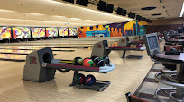
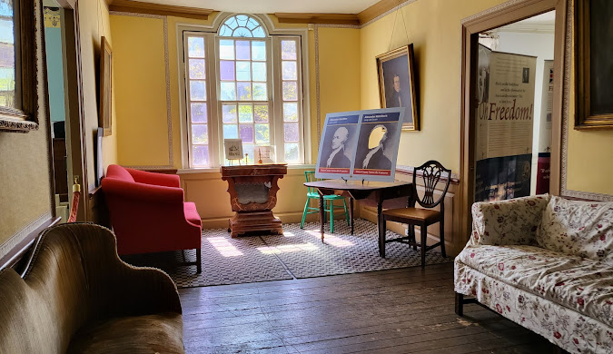

TAKE ME TO JERSEY
For Those Wanting to Explore New Jersey, But Just Don't Know Where to Go
The Stone Poney
The Stone Poney is a performing arts center, reserved usually for events like concerts, musicals, and pretty much any performances that reserve the area. Although this place is available for a variety of artistic people, as an audience member, you will most likely be viewing concert performances and music shows, as that is what The Stone Poney is known for. Come to The Stone Poney with friends for the best experience as you all can come together to listen to some great music.
Jersey Lanes
Jersey Lanes is a Bowling Alley that offers exactly what you expect, bowling. This bowling alley offers Youth and Adult leages, accomodations for birthday parties, and some decent pricing! Whether you come here just to spend time with friends and family, or if you want to surprise someone you know with a birthday bowling party, this is your go-to location in Elizabeth for bowling. Many bowling alleys offer normal lanes for bowling, but at Jersey Lanes, there is even a Mini Bowling Room, which is a fun-looking smaller bowling alley. This could be good for kids or anyone that just wants to try bowling in a different setting. Come here if you want to go bowling as a visitor of Elizabeth or a resident, the choice is up to you.
Boxwood Hall State Historic Site
If you are a fan of history, this place is the place for you. Boxwood Hall State Historic Site is a historic home originally belonging to Elias Boudinot in 1750, who was the President of the Continental Congress that ratified the Treaty of Paris. The site is eye-opening, displaying how people used to live, and how everyday life back then is completely different than everyday life now. Its almost like visiting an Open House from the 1750s. Come here with an open mind to really take a look into the past, and get a glimpse of how life used to be back then.